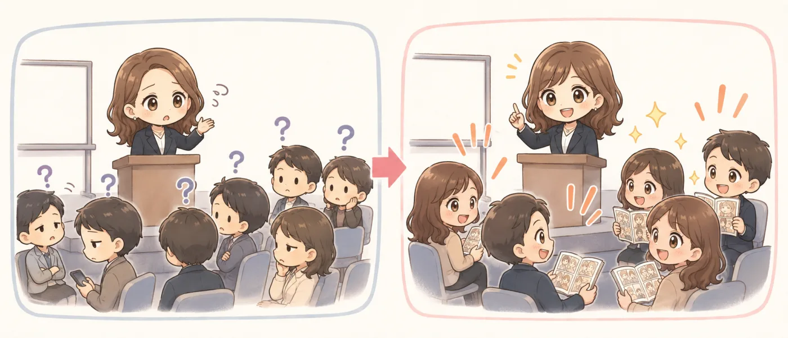
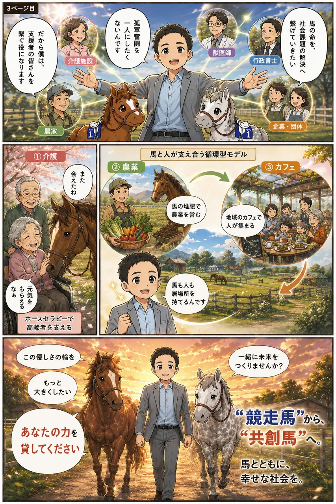
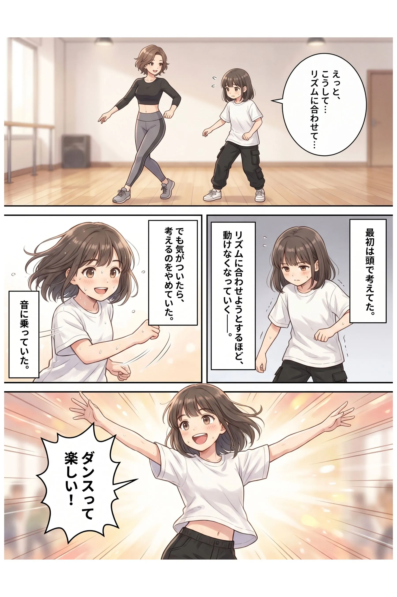
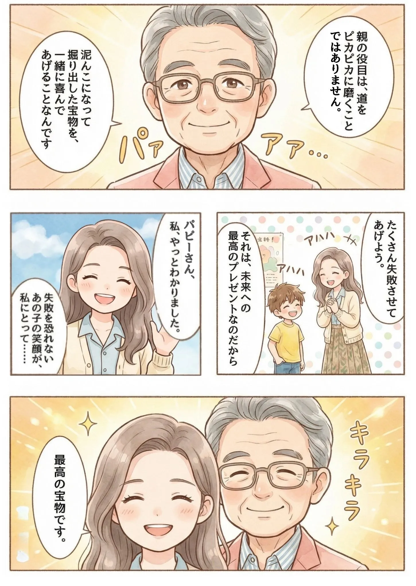
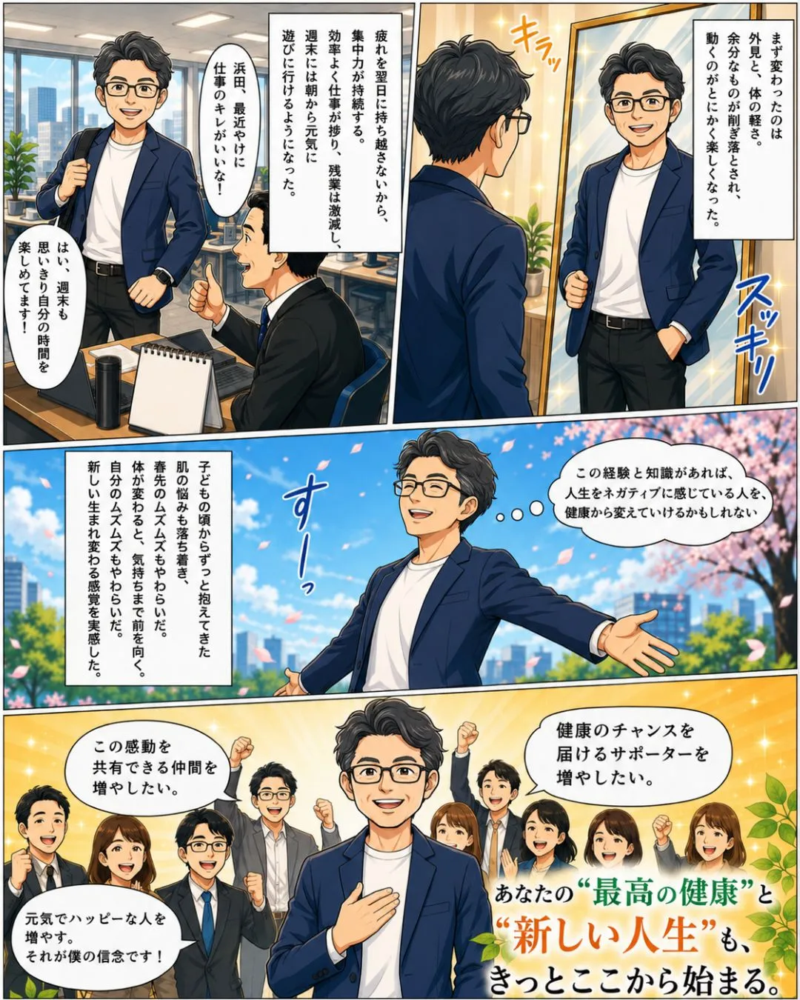
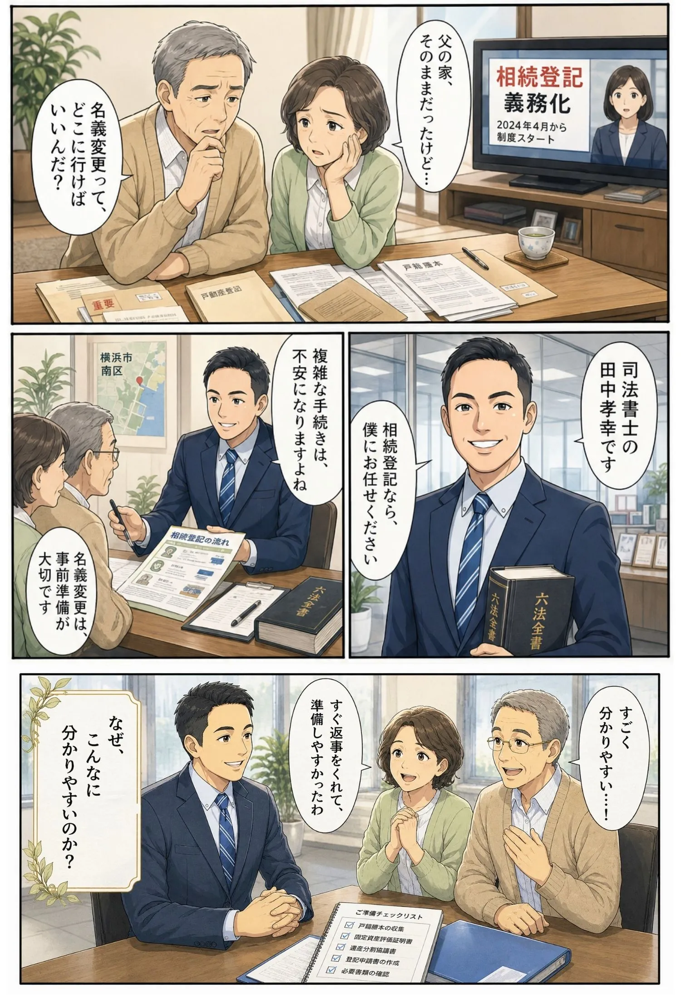
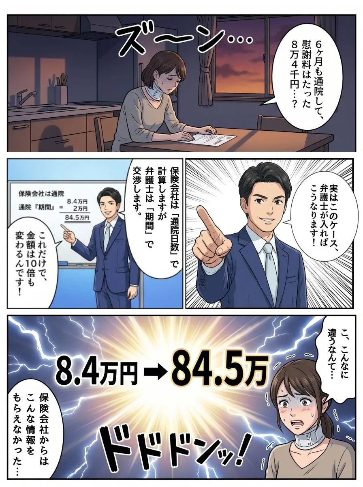
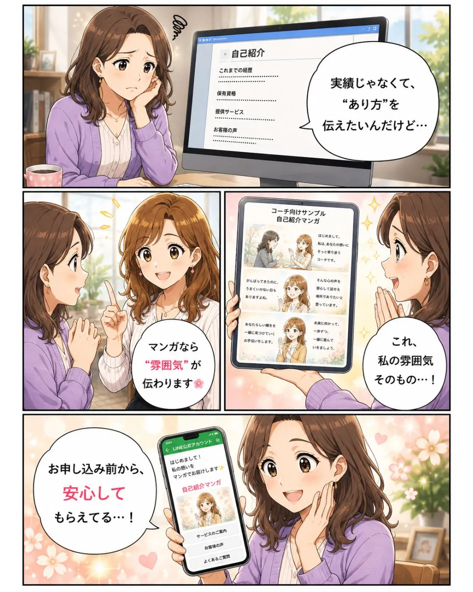

オーダーメイドのビジネスマンガで
“難しい専門性”を
“誰にでも伝わる魅力”に。
経営者・専門職・士業の「専門性はあるのに、自分の言葉では伝わらない」を、
ビジネスマンガで“翻訳”。
読まれて、覚えてもらえる自己紹介・事業紹介マンガをつくります。
1to1でお会いする前に、3分だけ私を知ってください。
My Story
マンガで読む、私のこと
言葉だけでは、伝わらない。
だから私は、自分のことを"マンガ"にしました。
読み終える頃には、あなたのビジネスにも
"伝わる見せ方"があると感じていただけるはずです。


マンガでお伝えしたことを、
動画でもお話ししています🎬
Who I am
私が、この仕事をしている理由
保健室の先生から、ビジネスマンガへ。
私がどんな人間で、これからどこを目指しているのか——7枚の物語でお話しします。
“伝わらない”を“伝わる”に。ビジネスマンガの鈴木ゆかです。少しだけ、私の物語を聞いてください。
※ このスライドは、すべて私が制作したビジネスマンガです。
「伝わらない」で困る人を、ひとりでも減らしたい。
専門用語や言葉の壁で置いていかれる人を、マンガの力で“誰が見ても、ちゃんと伝わる”に変えていく。私はこれを「情報のユニバーサルデザイン」と呼んでいます。
いずれは企業・行政のマニュアルを、外国籍や障がいのある方にも伝わる形に。将来は、ビジネスマンガ制作の講座・コンテンツ展開も目指しています。
鈴木 祐佳 すずき ゆか
Musubi Create
- 私の原点
- 「この人のために力になりたい」という想いは、保健室の先生として子どもたちと向き合っていた頃から今も変わりません。気づいていない強みを引き出し、その人らしい輝き方を一緒に見つけることが私の仕事です。
- 誰も知らない私
- 明るく見られますが、実は心配性。だからこそ「後悔しない準備」を徹底しています。頼ること・頼られることの中でこそ成長が生まれると実感し、丁寧な連携と誠実な仕事を大切にしています。
- 私の成功の鍵
- 「誰かのために」という想いを行動に変え続けること。娘との時間を大切にしながら、クライアントの「伝わらない」を「伝わる」に変え、その価値を世界に届けるサポートに全力を注いでいます。
Who I help
こんな“伝わらない”の力になれます
「専門性はあるのに、自分の言葉では良さが伝わらない」——
その“難しい専門性”を、ビジネスマンガで“誰にでも伝わる魅力”に翻訳します。

「実績も想いもあるのに、自己紹介で魅力が伝わらない」
あなたの専門性と人柄を、自己紹介・事業紹介マンガに。“また会いたい”と思われる、忘れられない自己紹介に変えます。
「専門用語が難しく、見込み客にサービスが伝わらない」
難しい制度や専門用語を、すっと分かるマンガに翻訳。公式LINE集客とあわせて、“分かる・選ばれる”を叶えます。
こんな方がいたら、
ぜひお繋ぎください
お心当たりの方がいらっしゃったら、
教えていただけると嬉しいです
マンガでお役に立てる方
- 専門用語が伝わらず、差別化に悩んでいる士業の方
- サービスが難しくて、価値が伝わりきらない経営者・専門職の方
- 研修のマニュアルやスライドを、分かりやすくしたい講師の方
一緒にお仕事できたら嬉しい方
- スタートアップの立ち上げを支援しているコンサルタントの方
- ホームページやLPを制作されている方
- 経営者・専門職向けにコンサルティングをされている方
「自分の専門性が、どうも伝わらない」が口ぐせの方が
いらっしゃったら、
ぜひ、私を思い出してください。
できること
「難しい専門性」を「伝わる魅力」に変える
主力は 自己紹介・事業紹介マンガ。あわせて、公式LINE集客 / 専門用語の翻訳マンガ / 研修・ケーススタディ用マンガ / 動画化 / SNS運用 まで対応できます。
制作の流れ
ヒアリング・設計
- 専門性・想い・価値の言語化
- 届けたい相手の明確化
- ストーリー構成の設計
ビジネスマンガ制作
- AI×Canvaで高速制作
- 色・表情・コマ割りを手作業調整
- 伝わる表現へブラッシュアップ
活用・改善
- 自己紹介・公式LINE・SNSで活用
- 反応を見ながら導線を改善
- “選ばれる”発信戦略の提案
マンガだと、なぜ伝わるのか
「伝わらない」を「伝わる」に。そして、集客導線に乗せて“選ばれる”まで。ビジネスマンガの5つの強みです。
成果につながる、4つの強み
10年以上の傾聴経験によるヒアリング力
元保健室の先生として「自分の良さが分からない」と悩む生徒に向き合ってきた経験を活かし、講師・士業の専門性を引き出して言語化。マンガのシナリオに落とし込みます。
AI×手作業で仕上げる制作力
AIのスピードを活かしながら、色・表情・コマ割りを細部まで手作業で調整。「AIでポンと出すだけ」では表現しきれない“あなたらしさ”を、こだわって視覚化します。
年商2億円規模の現場で培った実行力
約500名規模の環境で評価され、代表から直接声をかけられてスタッフに選出。年商2億円規模の企業サポートを通じ、実践的なAI活用とマーケ支援の経験を積んできました。
「伝わらない」を「伝わる」に翻訳する力
難しい専門用語や実績を、誰にでも伝わる言葉とマンガに“翻訳”。傾聴で引き出し、マーケ視点で構成する——AIだけに頼らない「伝わる設計」が私の強みです。
Portfolio
制作実績・作例







お問い合わせ・ご予約
オンライン相談（無料）
最適なプランをご提案するため、まずはお気軽にお話ししましょう。
空いている日程を選んでご予約ください。